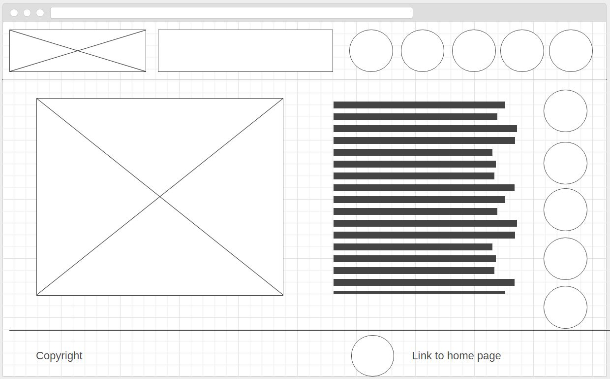

Site Purpose
I want to create a resource for people interested in motorcycles. I plan to have information about popular bikes that can be viewed and compared in an easy and natural way.
Target Audience Persona
Jacob, a man who own a motorcycle but, like anyone who own one bike, feels like he needs another bike. He sees a lot of popular bikes on campus but doesn't really know what is best for him.
Content Pages
- Home Page - Information about site and links.
- Sport Bikes - Popular sport and naked bike models with specs.
- Dirt Bikes - Popular offroad and dualsport bike models with specs.
- Cruisers - Popular touring and cruiser models with specs.
- Search - Search for various styles, brands, specs prices, and models to compare.
Wireframes
Small Wireframe
Large Wireframe
Style Guide
Black and Gray Color theme thoughout site. Accent colors will change on each page to represent the type of motorcycles on the page.
Fantacy and Sans Serif Fonts.